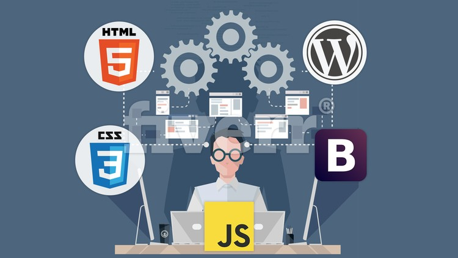
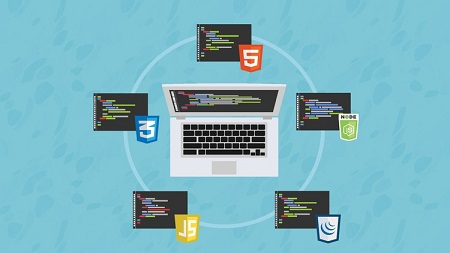
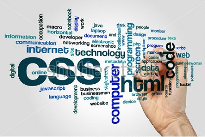
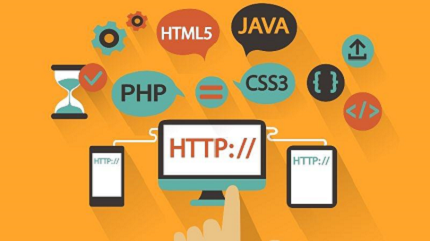

Requirements
- Have a computer with Internet
- Be ready to learn an insane amount of awesome stuff
- Prepare to build real web apps!
- Brace yourself for the tour adventure in web development.
Description
Hi! Welcome to the Web Developer Bootcamp, the only course you need to learn web development.There are lot of options for online developer training, but this is without a doubt the most comprehensive and effective on the market. Here's why:- This is the only online course taught by a professional bootcamp instructor
- 85% of my in-person bootcamp students go on to get full-time developer jobs. Most of them are complete beginners when I started working with them.
- This is the only complete beginner full-stack developer course that covers NodeJS.
- We build 15+ projects, including a gigantic production application called YelpCamp. No other course walks you through the creation of such a substantial application.
- The course is constantly updated with new content, projects, and modules. Think of it as a subscription to a never-ending supply of developer training.
When you're learning to program you often have to sacrifice learning the exciting and current technologies in favor of the "beginner friendly" classes. With this course, you get the best of both worlds. This is a course designed for the complete beginner,yet it covers some of the most exciting snd relevant topics in the industry.

This course is also unique in the way that it is structured and presented. Many online courses are just a long series of "watch as I code" videos. This course is different. I've incorporated everything I learned in my years of teaching to make this course not only more effective but more engaging. The course includes:
- Lectures
- Code-Alongs
- Exercises
- Projects
- Research Assignments
- Slides
- Downloads
- Readings
Who Is The Target Audience?
- This course is for anyone who wants to learn about web development, regardles of previous experience
- It's perfect for complete beginners with zero experience
- It's also great for anyone who does have some experience in a few of the technologies(like HTML and CSS) but not all
- If you want to take ONE COURSE to learn everything you need to know about web development, take this course.
  